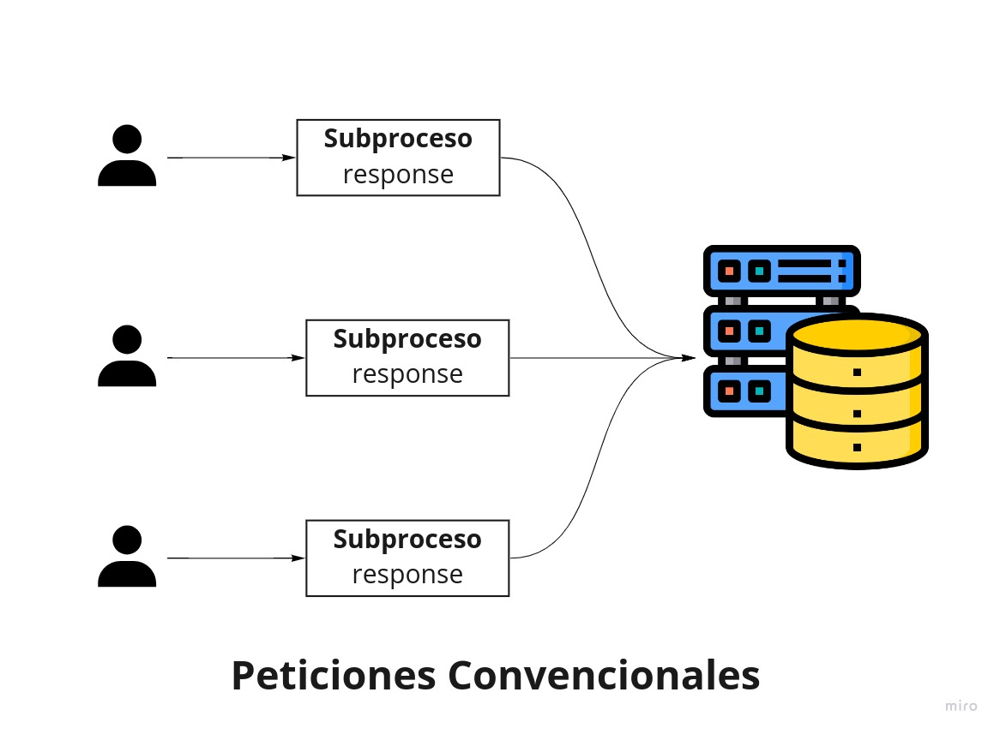
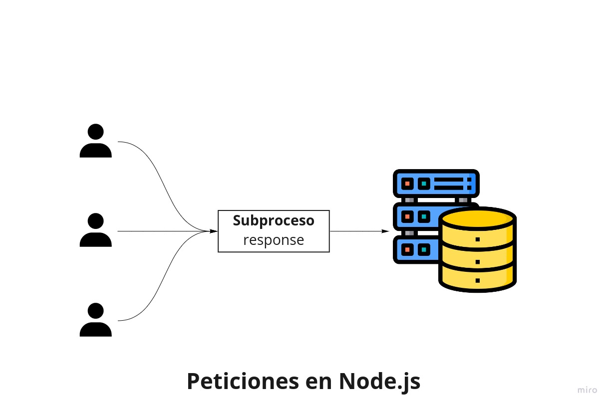

Node.js
Que es Node.js?
Es una tecnologia que nos permite utilizar todo el poder de javascript, fuera del navegador en el caso de node.js, es utilizado en el lado del servidor, existen otros lenguajes del lado del servidor como PHP, java, go entre otros. Por lo cual, si ya sabes javascript no sera tan dificil pasarte a Node.js.
Y en otros conceptos mas tecnicos podemos decir que: "Es un entorno de ejecucion, basado en el motor v8 orientado a eventos asincronos.
- Que es un entorno de ejecucion? es considerado una capa por encima del S.O (Sistema Operativo) que ejecuta software.
- Que es el motor v8?: basicamente es el entorno que usa google para compilar nuestro codigo js en lenguaje maquina.
- Que es la asincronia en Node.js? esta centrada en la capacidad que tiene node.js de evitar el bloqueo de un codigo sincrono, en el caso de la asincronia no existe el bloqueo y se continua con la ejecucion del codigo.
Caracteristicas de Node.js
- Al ser asincrono Node.js evita el bloqueo, lo cual ocurre cuando se tiene muchos subprocesos y debemos esperar que uno termine para avanzar con el siguiente.
- Gracias a que Node.js no realiza bloqueos podemos hacer peticiones a API's, sin preocuparnos por tener que esperar por algun bloqueo o error que exista, mientras continua con la ejecucion del codigo llevara un rastreo de esas peticiones y notificara al servidor cuando este lista.
- Node.js se maneja en base a un bucle de eventos.
- Node.js tiene como ciudadano de primer order a HTTP.
- Node.js esta basado en un modulo de I/O (Entrada/Salida), es decir nuestras entradas serian request (peticiones) y las salidas serian response (respuestas).
- Node.js esta pensado en aplicaciones que necesiten el uso de conexiones multiples claro esta con manejo de datos, pero si pensamos en aplicaciones que manejan una gran cantidad de datos, puede que perdamos ciertas ventajas de node.js
- Node.js esta escrito en su mas bajo nivel en C++, lo que permite una compilacion mucho mas rapida al lenguaje maquina.
Como funciona Node.js?
Node.js trabaja bajo un unico subproceso, el cual se encarga de manejar las entradas y salidas, evitando los bloqueos, los cuales pueden ser generados por llamadas a API’s, consultas a base de de datos, entre otros.
Por lo cual, supongamos que nuestra aplicacion en node.js se realiza una llamada a una API de imagenes y luego realizamos otra llamada a una API de musica, probablemente pienses que node.js se detendra a esperar que se cargue la primera llamada a la API de imagenes, y que luego continuara con el codigo, pero esto seria un bloqueo, todo lo contrario node.js seguira con la ejecucion del codigo, pero generara una funcion de devolucion de llamada (callback - permite realizar otras tareas puede ser sincrono y asincrono), seguira avanzando con el codigo y cuando tenga tiempo hara la llamada a esas funciones para luego finalizar las llamadas a las API’s mostrando el resultado y finalizando el script en node.js.
Veamos una comparativa de las peticiones convencionales desde un cliente a un servidor.
En esta imagen podras ver que por cada peticion crea un nuevo subproceso, lo cual esta intrinsicamente relacionado con la capacidad de la memoria RAM, A que me refiero? 💆 1mb es equivalente a un subproceso, por lo cual, si tenemos 4GB de RAM tendremos la capacidad a 4096mb o 4096 subprocesos, lo cual es muyyy lento.

Ahora veamos como lo maneja node.js. Node majena un unico subproceso, recibe las peticiones request, realiza un mejor manejo de los recursos, y dentro de si realiza el manejo de la asincronia, de seguro podras notar que el inconveniente que tiene es que si el subproceso falla toda la app se cae.😱
